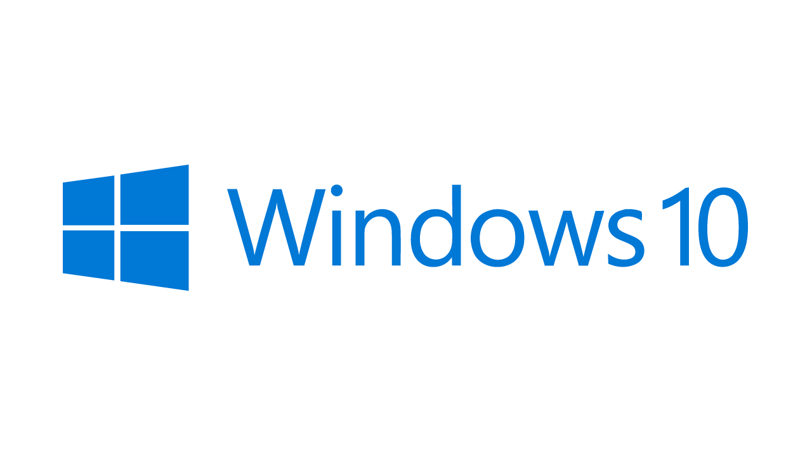

Goodbye Windows 10
A few days ago, on the 14th of October 2025 marked the end of support for Windows 10 from Microsoft, here's my experience of Windows 10. Windows 10 was originally released just over a decade preciously in July 2015 and more than made up for the confusing and contradictory release of Windows 8, that release saw the start button removed then re-added in Windows 8.1 along with a late call before release on whether to retain legacy desktop alongside modern applications creating an unclear message for Windows 8.
Windows 10 was a major upgrade from those on Windows 8 or a fantastic start to Windows for those who weren't, there was also more choice with existing laptops and desktops well catered for as aways but thanks to new applications powered by Universal Windows Platform bringing experiences to tablet, mobile with Windows 10 Mobile, console with Xbox and even mixed reality on HoloLens plus there was even support for IoT with Windows 10 making it possible to run these new UWP applications on devices such as a Raspberry Pi. Windows 10 could reach every single device form factor all made possible with the Universal Windows Platform.
Windows 10 with Universal Windows Platform took the approach from Windows 8 and evolved it into a powerful and flexible platform that enabled a whole host of modern first-party applications as well encourage a host of third-party applications to the platform. I adopted UWP as soon as I could and to learn as I had previously published my own tutorials at tutorialr.com. I also wrote applications taking advantage of services available at the time such as Groove Music which was the evolution of Microsoft's previous music offering of Xbox Music and before that Zune and to be able to run apps on desktop, mobile and even console was interesting and exciting!
Windows 10 was originally pitched as the last version of Windows with updates to bring enhancements and features which included more modernisation of the platform plus new features meant updates brought fresh features such as Windows Ink for stylus and pen input, creators update offering 3D printing support, Paint 3D and mixed reality features plus later updates introduced the Fluent Design System which is still used today. After two years it was announced that Windows 10 Mobile would no longer gain new features and two years later Microsoft's mobile ambitions finally ending in 2019 when it reached end of life just four years, marking the beginning of the narrowing of the broad range of devices for Windows.
Windows 10 would not be the forever Windows when Windows 11 was announced and released in October 2021. Windows 11 would introduce higher system requirements that before meaning many devices were unable to be upgraded, there was also the end of the Universal Windows Platform which was replaced by Windows App SDK which although supported later versions of Windows 10 only supported desktop so it was no longer possible to target the remaining form factors after mobile was removed of console with Xbox and HoloLens, which itself was discontinued last year. Windows 11 was an amazing operating system which brought a refreshed start menu, ironically first developed for Windows 10 X which was a cancelled variation designed for Surface Neo which was also cancelled.
Windows 11 has enhanced the experience for consumers and developers alike with many features such as Windows Widgets which resurrected the gadgets feature from Windows Vista along with more recent innovations such as Microsoft Copilot and the push for devices with dedicated AI-enabled hardware with Copilot + PCs. Ironically the push for local AI means that new hardware is indeed necessary with Windows 11 being able to leverage this and imbue the operating system with AI far beyond what Windows 10 could ever be capable of, although it did get the basic Microsoft Copilot experience back ported for those who remained on Windows 10. Windows 10 also was the last operating system to fully support IoT devices for modern Windows applications which were also no longer supported with the move to Windows App SDK.
Windows 10 still plays a small role in what I do as it runs on the Surface Book that is used to record the RoguePlanetoid Podcast as a dedicated machine that although left behind with the release of Windows 11 still has a part to play at least. Windows 11 is enabling more experiences than ever with the Windows App SDK maturing to be beyond Universal Windows Platform in many ways or finally being joined by many features that remained exclusive to that platform, I'm thinking of you InkCanvas! However, now as Windows 10 has reached its end, it is good to think of the age it brought and the potential it delivered but in an everchanging world where other platforms see major hardware and software shifts every few years it will be interesting to see where Windows goes in the future, but a least it is possible to look back and celebrate Windows 10!